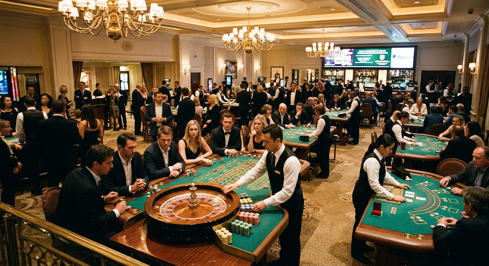
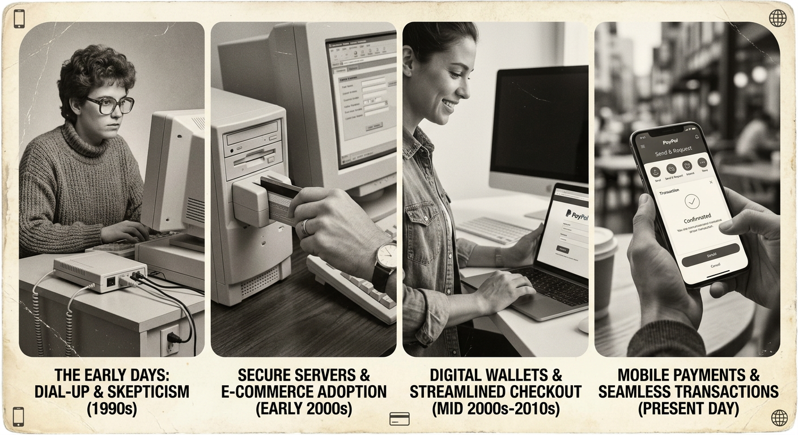
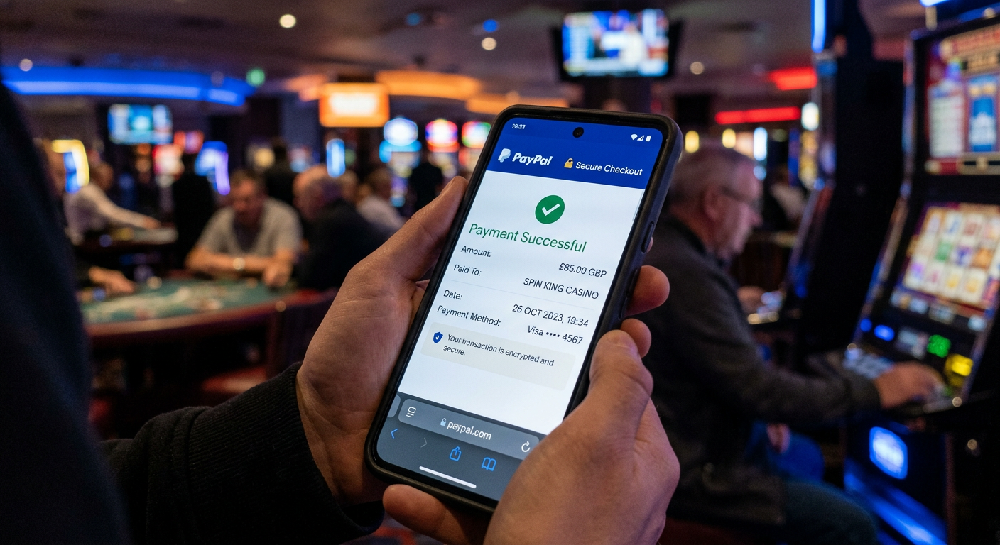
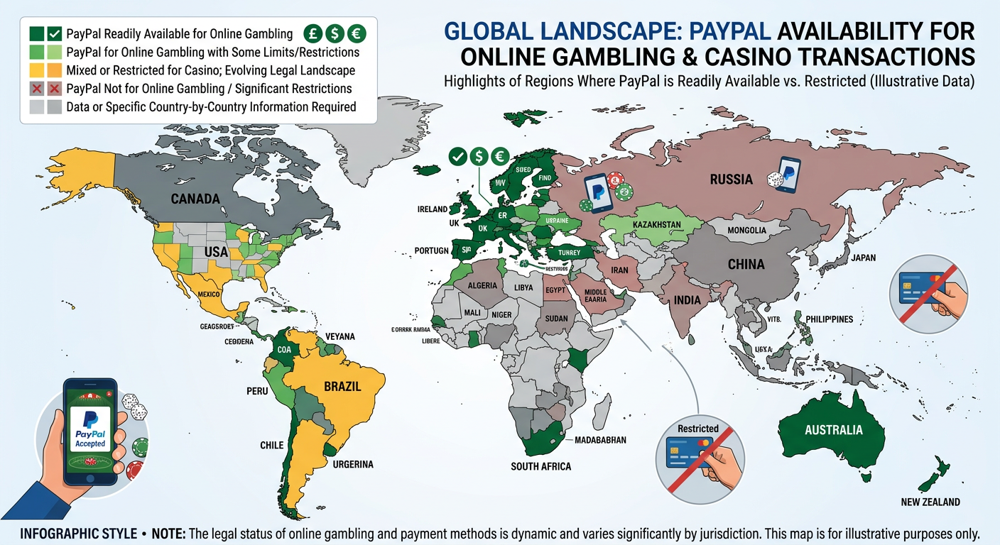

Casinos Non AAMS PayPal: Top International Gaming Sites
The global online gambling landscape has undergone a massive transformation in recent years, leading many players to seek alternatives beyond traditional domestic regulations. For many enthusiasts, casinos non aams PayPal represent the pinnacle of flexibility, offering a combination of high-speed transactions and expansive gaming libraries. These platforms operate outside the immediate jurisdiction of the Italian ADM (formerly AAMS), providing a "non-AAMS" environment that often features more competitive bonuses and fewer bureaucratic hurdles for international players.
While the term "AAMS" refers to the Italian regulatory body, the phrase has become a shorthand in the industry for any licensed platform that adheres to strict, often restrictive, local European mandates. By choosing casinos non aams PayPal, players can access a broader world of entertainment while maintaining the security of one of the world's most trusted electronic wallets. This guide explores the intricate details of these platforms, how they function, and why PayPal remains the preferred choice for savvy gamblers.
Finding a reliable site requires more than just looking for a logo. It involves understanding the licensing behind the scenes, the quality of the software providers, and the efficiency of the "metodi di pagamento" used for withdrawals. In this comprehensive review, we will break down the top-rated sites and provide a step-by-step roadmap for those looking to maximize their online gaming experience safely.
The Appeal of Non-AAMS Online Platforms
The primary draw of casinos non aams PayPal lies in the freedom they offer. Domestic regulators often impose strict limits on maximum bets, deposit amounts, and even the speed of slot spins. International platforms, often licensed by the Curacao Gaming Control Board or the Malta Gaming Authority (MGA), tend to have more relaxed rules, allowing for a more authentic high-stakes experience. These sites are frequently referred to as "online non" AAMS options, catering to a global audience that values variety over local restrictions.
Beyond the lack of limits, these platforms are known for their massive "bonus di benvenuto" packages. Because they operate on a global scale, they have the liquidity to offer thousands of dollars in matched deposits and hundreds of free spins. For many, the choice to use casinos non aams PayPal is driven by the desire to get more value for every dollar deposited. Furthermore, the inclusion of PayPal adds a layer of "sicurezza" that is often missing from less reputable offshore sites.
Another significant factor is the gaming software. Non-AAMS sites often partner with a wider array of developers. While local sites might be limited to a few dozen providers, international hubs often feature games from over 100 different studios, including niche creators that push the boundaries of graphic design and gameplay mechanics. This diversity ensures that the "di gioco" experience never becomes stale or repetitive.
Expert Rankings of Casinos Non AAMS PayPal

Navigating the sheer number of available platforms can be daunting. Our team of experts has rigorously tested dozens of sites to identify the leaders in the casinos non aams PayPal sector. We look specifically at transaction success rates, customer support responsiveness, and the fairness of wagering requirements. Below are the top-performing platforms currently dominating the international market.
Wild Tokyo – Bonus del 250% fino a € 2.500 + 500 Free Spin
Wild Tokyo has quickly established itself as a premier destination for those seeking casinos non aams PayPal. The site features a distinct neon-noir aesthetic and a massive library of over 3,000 games. Their "bonus di" benvenuto is particularly impressive, offering a multi-tier structure that rewards players well beyond their first deposit. The platform is known for its high-octane environment and its loyalty program that mimics the excitement of a Tokyo nightlife experience.
Boomerang – Bonus casinò del 100% fino a €500 + 200 Free Spin
Boomerang Casino lives up to its name by ensuring players have a reason to keep coming back. As one of the top casinos non aams PayPal, Boomerang focuses on "rapidità nei versamenti e incassi," ensuring that players receive their winnings with minimal delay. Their interface is sleek, mobile-responsive, and packed with the latest titles from providers like Evolution Gaming and NetEnt. It is a standout choice for those who prioritize a smooth user interface and consistent promotional offers.
Need For Spin – Bonus del 100% fino a € 300 + 100 Free Spin
For fans of high-speed action, Need For Spin offers a racing-themed environment that is both engaging and lucrative. This platform is a highlight among casinos non aams PayPal due to its daily "bonus di" reloads and innovative shop where players can exchange loyalty points for free spins or cash. The site is optimized for performance, ensuring that even the most graphically intensive live dealer games run without lag on any device.
Mr Pacho – Bonus 100% fino a € 500 + 200 Free Spin
Mr Pacho brings a colorful, music-inspired vibe to the world of casinos non aams PayPal. It stands out not just for its aesthetics, but for its comprehensive sportsbook integrated directly into the casino platform. Players can easily switch between spinning the reels and betting on live football matches. The "metodi di pagamento" here are diverse, but PayPal remains a favorite for its "privacy e sicurezza" features that protect user data during every transaction.
Lamabet – Bonus del 100% fino a € 500 + 200 giri gratis
Lamabet is a newer entry into the market of casinos non aams PayPal, but it has made a significant impact with its user-centric approach. The platform offers a clean, distraction-free environment where the focus is entirely on the games. With a "bonus di benvenuto" that is competitive and transparent, Lamabet has garnered a loyal following of players who appreciate its straightforward terms and conditions and its commitment to responsible gaming practices.
How We Evaluate International Gambling Sites

Our evaluation process for casinos non aams PayPal is comprehensive and objective. We do not simply look at the surface-level aesthetics; we dive deep into the technical infrastructure of each site. Our goal is to ensure that any platform we recommend meets the highest standards of the international gaming industry. We believe that players deserve transparency, especially when dealing with "metodi di pagamento" and personal financial data.
Foreign Licensing and Regulation
The first step in our review is verifying the "licenza straniera." Even though these are casinos non aams PayPal, they must still hold a valid license from a reputable jurisdiction. We check the validity of licenses from the Curacao Gaming Control Board and the Malta Gaming Authority. These bodies ensure that the "aams che" non-Italian platforms operate under strict guidelines regarding game fairness and financial solvency. A license is the cornerstone of trust in the offshore market.
Security Protocols and Data Encryption
When using casinos non aams PayPal, "sicurezza" is paramount. We analyze the SSL (Secure Socket Layer) encryption used by the site to protect data transmission. Additionally, we look for firewalls and intrusion detection systems that prevent unauthorized access. The presence of PayPal itself is a strong indicator of security, as the payment provider only partners with platforms that meet its rigorous internal safety standards. We also verify if the games are regularly audited by independent bodies like eCOGRA or iTech Labs.
PayPal nei casinò online: La storia

To understand the dominance of casinos non aams PayPal today, one must look at the history of this payment giant. Founded in 1998 as Confinity and later merging with Elon Musk's X.com, PayPal revolutionized how money moves across the internet. In the early 2000s, after being acquired by eBay, PayPal became the gold standard for e-commerce. Its foray into the gambling world was initially cautious, but it eventually became the most sought-after "metodi di pagamento" in the industry.
The relationship between PayPal and the gaming sector has always been defined by strict compliance. For a long time, PayPal only operated in highly regulated markets. However, as the "online non" AAMS sector matured and international licensing became more robust, PayPal expanded its reach. Today, casinos non aams PayPal are a testament to the platform's ability to balance innovation with safety, providing a bridge between traditional banking and the modern digital economy.
According to Wikipedia's history of PayPal, the company has always prioritized user protection. This legacy continues in the gambling space, where PayPal acts as a buffer between the player's bank account and the casino operator. This historical context explains why so many players actively seek out "casinò non aams" that specifically support this e-wallet, as it brings a decade's worth of trust to the table.
Privacy e sicurezza nei pagamenti con PayPal

One of the primary reasons players flock to casinos non aams PayPal is the unparalleled level of "privacy e sicurezza" offered by the service. When you use PayPal, you do not have to share your credit card details or bank account numbers directly with the casino. This reduces the "superficie di attacco" for potential hackers and ensures that your sensitive financial information remains stored in PayPal's highly encrypted vaults.
PayPal also employs advanced fraud detection algorithms. If there is unusual activity on your account while playing at casinos non aams PayPal, the system can automatically flag or block the transaction to protect your funds. Furthermore, the two-factor authentication (2FA) required for logins adds an extra layer of protection. For players concerned about "sicurezza," this e-wallet provides peace of mind that traditional credit cards often cannot match in the international market.
Disponibilità di PayPal

While PayPal is a global leader, its "disponibilità" can vary depending on the operator's specific jurisdiction and the player's location. In the context of casinos non aams PayPal, many top-tier sites like 20Bet and NitroBet have successfully integrated the service to cater to a global audience. However, it is always important to check the "metodi di pagamento" section of a site before registering to ensure that PayPal is available for both deposits and withdrawals in your specific region.
The availability of PayPal is often a sign of a high-quality operator. Because PayPal has such strict merchant requirements, its presence on a site often serves as a "seal of approval." Players should look for the PayPal logo in the footer of the website or within the "cassa" (cashier) section. If a site is among the casinos non aams PayPal, it typically highlights this feature prominently as a major selling point for prospective users.
Guide to Using PayPal on Foreign Sites
Getting started with casinos non aams PayPal is a straightforward process, but there are a few key steps to ensure a smooth experience. Since these sites operate under "licenza straniera" rules, the registration process might feel slightly different from domestic platforms. Following a structured approach will help you avoid common pitfalls and get straight to the "di gioco" action.
Passo 1: Scegliere un casinò e registrarsi
The first step is selecting a platform from our vetted list of casinos non aams PayPal. Once you have chosen a site, such as Winnita or Lanista, click the "Sign Up" or "Register" button. You will need to provide basic information, including your name, email address, and date of birth. It is crucial to use your real information, as you will eventually need to complete a KYC (Know Your Customer) check to withdraw your winnings. This initial step is where you can often "attiva il bonus di benvenuto" by ticking a box or entering a promo code.
Verifica dell'account PayPal
Before you can fund your account at casinos non aams PayPal, your PayPal account must be in good standing. This involves "verifica dell'account," which typically requires linking a bank account or credit card and confirming your identity through PayPal's internal process. A verified account has fewer limits and higher security clearance, making it ideal for the "rapidità nei versamenti" that online gamblers crave. Ensure your PayPal email matches your casino registration email for the fastest processing times.
Passo 4: Prelevare
Once you have enjoyed the games and hopefully secured some winnings, the next step is the withdrawal. In casinos non aams PayPal, "passo 4: prelevare" is usually as simple as heading to the cashier, selecting PayPal, and entering the amount. Because PayPal is an e-wallet, the "di pagamento" speed is significantly faster than bank transfers. In many cases, funds appear in your account within 24 hours of the request being approved by the casino's finance team.
Benefits of Choosing Casinos Non AAMS PayPal
There are numerous advantages to opting for casinos non aams PayPal over traditional localized options. These benefits range from financial flexibility to the sheer volume of available content. For many players, the "vantaggi troviamo" in these international sites far outweigh the perceived risks of playing outside their home country's immediate regulatory framework.
- Higher Deposit Limits: Enjoy "meno limiti nei pagamenti online," allowing for larger sessions.
- Faster Payouts: Experience "rapidità nei versamenti e incassi" that traditional banks can't match.
- Exclusive Games: Access "online non" AAMS titles that aren't available on domestic platforms.
- Better Odds: International sites often have lower overheads, leading to better RTP percentages.
- Privacy: Keep your gambling transactions off your primary bank statements by using an e-wallet.
Meno limiti nei pagamenti online
One of the most frustrating aspects of regulated domestic markets is the cap on how much you can deposit or withdraw. casinos non aams PayPal provide a solution by offering "meno limiti nei pagamenti online." Whether you are a casual player or a high roller, these sites accommodate your budget without unnecessary interference. This flexibility is a core reason why platforms like DudeSpin have become so popular among serious enthusiasts who find local regulations too stifling.
Rapidità nei versamenti e incassi
In the world of online gaming, speed is everything. casinos non aams PayPal excel in "rapidità nei versamenti e incassi." Deposits are instantaneous, allowing you to "inizia puntare" within seconds of opening your account. Withdrawals are equally impressive; while a bank transfer might take 5-7 business days, a PayPal transaction is often completed on the same day. This efficiency is a hallmark of top-tier international sites that prioritize user satisfaction and liquidity.
Using PayPal to Purchase Cryptocurrency for Gaming
A growing trend in the casinos non aams PayPal space is the bridge between traditional e-wallets and "criptovalute." Many modern platforms now allow players to use their PayPal balance to purchase digital assets which can then be used for gaming. This adds an even deeper layer of "privacy e sicurezza" and opens the door to specialized crypto bonuses that are often even larger than standard fiat offers.
Sites like NitroBet and 20Bet often support a hybrid model where you can deposit via PayPal or various coins. By using PayPal as your entry point into the crypto world, you benefit from the familiarity of a known brand while gaining the technological advantages of the blockchain. This "di gioco" evolution is a primary driver of the industry's current growth phase.
Bitcoin, Litecoin, Ethereum
When transitioning from casinos non aams PayPal to crypto-integrated sites, three names stand out: Bitcoin, Litecoin, and Ethereum. Bitcoin remains the most popular for its "sicurezza" and wide acceptance. Litecoin is favored for its "rapidità" and low transaction fees, making it perfect for smaller deposits. Ethereum is the backbone of "smart contracts," which some advanced "casinò non aams" use to guarantee the fairness of their games. Most players find that holding a small amount of each provides the most flexibility.
Alternative Payment Methods to Consider
While casinos non aams PayPal are the focus, it is always wise to have a backup "metodi di pagamento" in mind. Sometimes a specific site might have a temporary outage with one provider, or you might find a bonus that is exclusive to another wallet. Diversity in your financial tools ensures that your "di gioco" experience is never interrupted. The international market is rich with "altri metodi di pagamento sui siti non AAMS" that offer similar levels of protection.
| Payment Method | Type | Transaction Speed | Anonymity Level |
|---|---|---|---|
| PayPal | E-wallet | Instant / 24h | High |
| Skrill | E-wallet | Instant / 24h | High |
| Neteller | E-wallet | Instant / 24h | High |
| PaysafeCard | Prepaid | Instant | Maximum |
| Bitcoin | Crypto | 10-60 mins | Maximum |
Skrill e Neteller
These two e-wallets are the cousins of PayPal and are ubiquitous in casinos non aams PayPal environments. Owned by the Paysafe Group, "Skrill e Neteller" were built specifically for the gambling industry. They offer similar "rapidità nei versamenti" and are often accepted at even more sites than PayPal. However, be aware that some platforms exclude these wallets from the "bonus di benvenuto," so always read the fine print before depositing.
Prepaid Solutions and Credit Cards
For those who prefer a more traditional approach, "Visa/Mastercard" remain viable options, though they lack the privacy of e-wallets. A better alternative for privacy is the PaysafeCard. This prepaid voucher system allows you to deposit at casinos non aams PayPal without even having a bank account. You simply buy a code with cash at a local retailer and enter it on the site. It is the ultimate "di pagamento" method for those who want to remain completely anonymous.
Potential Drawbacks and Limits
Despite the many benefits, playing at casinos non aams PayPal is not without its challenges. It is important to have a balanced view of the market. One common issue is that PayPal might charge small "spese per le operazioni" for currency conversion if you are playing in a currency different from your account's base. Additionally, while the "online non" AAMS sector is generally safe, the lack of local government protection means you must be more diligent in choosing where you play.
Another factor to consider is the "limiti" placed by PayPal itself. If you are a new user, PayPal may limit your transaction volume until you have established a history of successful payments. Understanding "come rimuovere le limiti dal tuo conto PayPal" is essential for long-term play. This usually involves submitting a photo ID and a utility bill to PayPal's security team to prove your identity and address.
Come rimuovere le limiti dal tuo conto PayPal?
If you find that your transactions at casinos non aams PayPal are being declined or capped, you likely need to "rimuovere le limiti." Log into your PayPal account and look for the "See how much you can send with PayPal" link. From there, you will be prompted to "verifica dell'account" by providing additional documentation. Once this process is complete, you will have much higher "limiti nei pagamenti online," allowing for a smoother experience at high-stakes platforms like NitroBet.
Licenza Straniera and Regulatory Overview
The concept of "licenza straniera" is what makes casinos non aams PayPal possible. These licenses are issued by sovereign nations that have created a legal framework for international online gambling. The most common is the Curacao license, which is favored for its flexibility and support for "criptovalute." However, the MGA license from Malta is often seen as the "gold standard" due to its stricter player protection rules. Understanding the difference helps you choose a site that aligns with your risk tolerance.
It is a common misconception that "non-AAMS" means "unlicensed." In reality, these platforms are heavily regulated by their respective home countries. The ADM in Italy only regulates the Italian market; it does not have the authority to declare international sites illegal for global players. By choosing casinos non aams PayPal that hold a reputable foreign license, you are still playing within a legal and structured environment that values fair play and financial integrity.
Conclusion
In the vast world of online entertainment, casinos non aams PayPal stand out as a premier choice for players seeking a blend of security, variety, and generous rewards. These platforms offer an escape from the "limiti" of domestic regulations while providing access to the latest innovations in "di gioco" technology. Whether you are drawn by the massive "bonus di benvenuto" or the rapid "metodi di pagamento," there is no denying the appeal of these international hubs.
As we have explored, the key to a successful experience lies in choosing the right platform—such as 20Bet, Winnita, or Lanista—and utilizing the robust security features of PayPal. By following the "passo 1: scegliere un casinò" guide and maintaining a verified account, you can enjoy the best the gambling world has to offer with total peace of mind. Remember to gamble responsibly and always stay informed about the latest trends in the "online non" AAMS sector.
Ultimately, the rise of casinos non aams PayPal reflects a global shift toward more personalized and flexible gaming experiences. As technology continues to evolve, these platforms will likely lead the way in integrating new features like VR gaming and more advanced "criptovalute" options. For now, they remain the most reliable and exciting way to engage with online casinos on a global scale.
Frequently Asked Questions
Are casinos non aams PayPal safe for US players?
Yes, many casinos non aams PayPal are safe as they hold reputable international licenses from jurisdictions like Curacao or Malta. These sites use high-level encryption to ensure the "sicurezza" of your data and funds. However, always verify the specific site's reputation before depositing.
What is the typical bonus di benvenuto at these sites?
In the international market, a "bonus di benvenuto" is often much larger than at local sites. It is common to see offers ranging from 100% to 250% match on your first deposit, often accompanied by hundreds of free spins on popular slots. Sites like Wild Tokyo are famous for these high-value packages.
Can I use PayPal for both deposits and withdrawals?
Generally, yes. casinos non aams PayPal typically support the e-wallet for both "versamenti e incassi." This is one of the main advantages of the service, as it provides a consistent and fast way to manage your bankroll without switching between different "metodi di pagamento."
What are the best alternatives to PayPal?
If PayPal is unavailable, the best alternatives are other e-wallets like "Skrill e Neteller," or the prepaid "PaysafeCard." Many players also use "criptovalute" like Bitcoin or Ethereum for their anonymity and "rapidità" in processing large winnings.
How do I know if a casino has a valid licenza straniera?
You can usually find information about the "licenza straniera" in the footer of the casino's homepage. Look for a logo or a license number from the MGA or Curacao. You can then verify this number on the official website of the regulatory body to ensure it is active and legitimate.